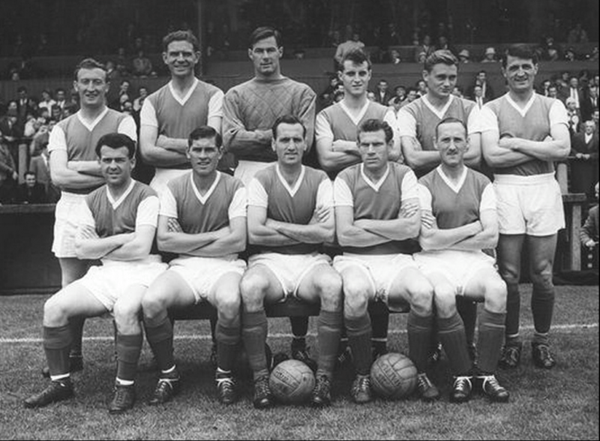
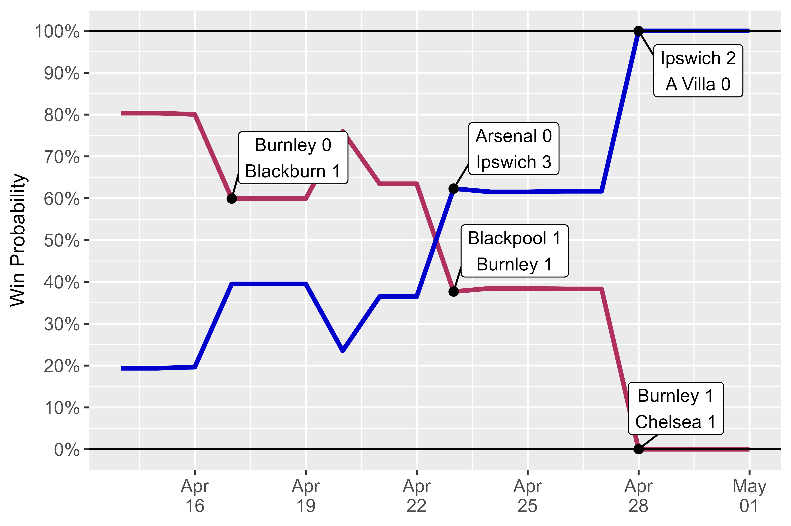
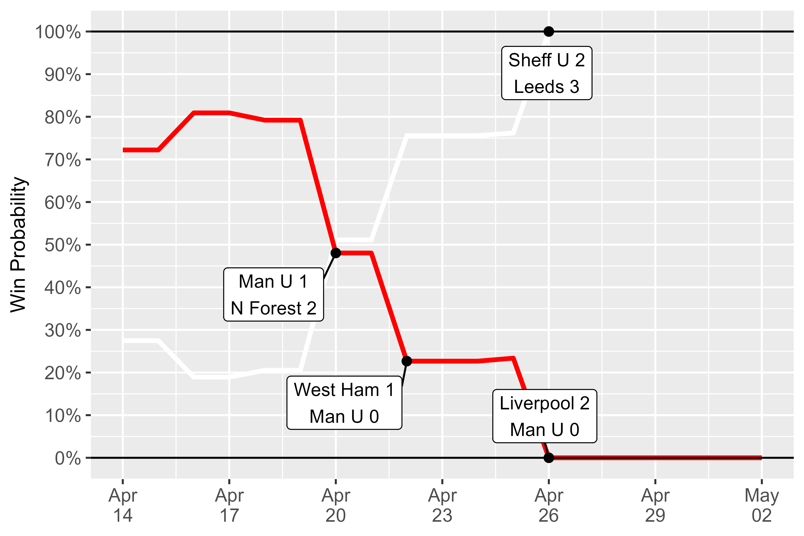
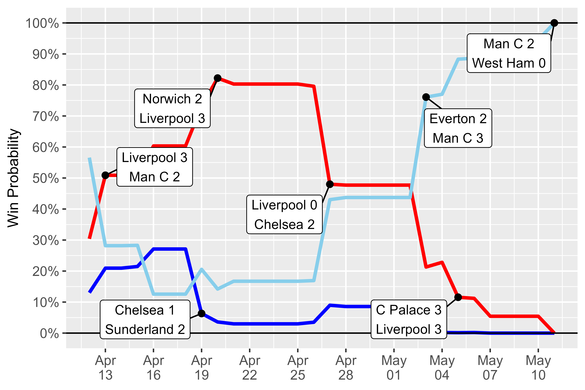
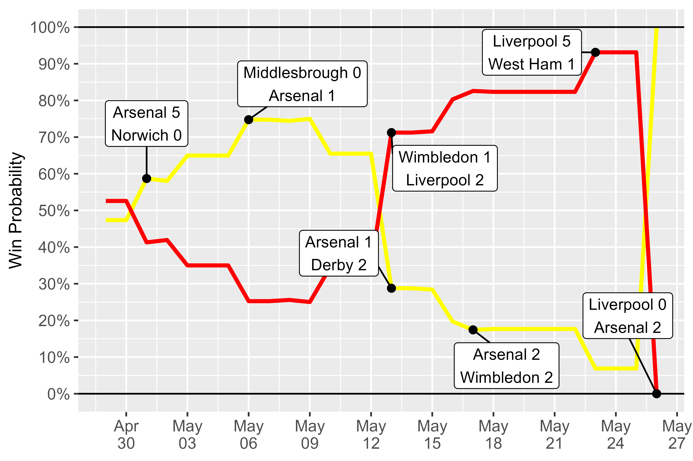
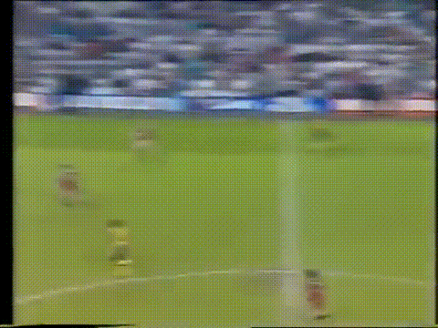
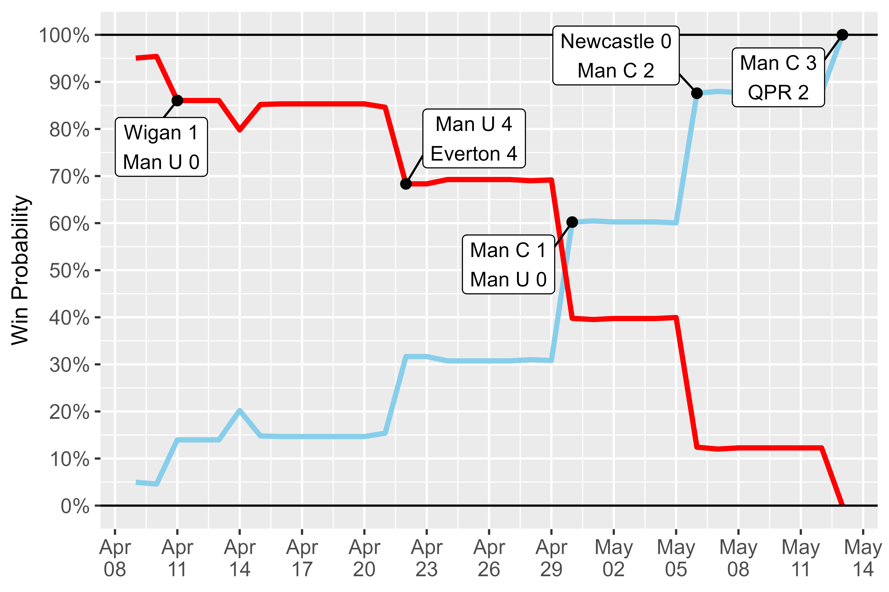

What are the worst league title collapses in English football history?
28 June 2025
Using an Elo-derived simulation model, I used probability to rank the five biggest late-season collapses since World War 2. Liverpool and Manchester United fans may wish to proceed with caution…
In last season’s Eredivisie, Ajax suffered a dramatic late collapse, winning only one of their last five games to blow a nine point lead over PSV.
It got me thinking about England, and which teams historically have had the highest probability of winning the league only to fail at the end - and how would we quantify that? I decided to create a model that could give the probability on any date of each team becoming champions.
Plan of Attack
For those who are curious about the mathematics and code behind the model, I will explain this more fully in a separate article. But here are the basics:
- Daily team ratings were taken from http://clubelo.com/.
- An adjusted negative binomial model was created to generate score probabilities.
- Club Elo ratings begin in 1940, so only seasons since the Second World War were analysed (sorry, Huddersfield fans).
- At the end of each match day, standings were calculated and the remainder of the season was simulated 10,000 times.
- Only teams with 6 or fewer remaining matches were included - this is about late collapses rather than well-fancied teams having a bad year (also it saves a lot of time running the simulations).
- League tables were calculated according to the correct rules for the time - so that’s goal average up to 1976, and 2 points for a win until 1981.
Without further ado, here are the top five teams who had a great chance to be champions, but couldn’t do the business:
5. Burnley 1961-1962 (Probability: 80.4%)
I’ll be honest, I didn’t even know Ipswich Town had ever won a league championship. But when I scratched beneath the surface, their 1961-1962 win emerges as one of the more fascinating and unexpected championships in football league history.
 Ipswich Town 1961-1962. They may look like Al Capone’s henchmen, but these guys were champions of England.
At the time, Burnley were a true force in English football, having won the league in 1960 and in the midst of a run of 12 consecutive top half finishes. The dominant team of the era were Bill Nicholson’s Spurs, coming off a historic league & cup double the previous season, and this year reaching the European Cup semi-final where they would lose to Benfica.
There was also an emerging Everton side who were about to embark on a 10-year stretch where they won two league titles and finished outside the top 6 only once.
Ipswich, meanwhile, were playing in the top flight for the first time in the club’s history under manager Alf Ramsey, a former Spurs right back who learned his trade under Arthur Rowe in Tottenham’s influential “push and run” champions of 1951.
Despite trailing by a point, on the 14th of April Burnley had two games in hand and as the strongest team were still considered 80% favourites, with the next two games at home to Lancashire rivals Blackburn and Blackpool.
(42-game season)
With 6 games to go, Burnley were the best team, with the best goal average, and two games in hand.
One thing this model doesn’t account for is fixture congestion. Burnley had played an FA Cup semi-final replay on the 9th of April, and faced a staggering 8 further league games in the remainder of the month, including three games in four days.
Jurgen Klopp would not be amused if you gave him this fixture list.
Burnley’s finish was grim: just one win from their final eight games. Ipswich became 61% favourites after a 3-0 win at Arsenal in their penultimate match, before sealing the championship with a 2-0 victory over Aston Villa with star striker Ray Crawford scoring both goals.
Division One Title Race 1961-1962  Ipswich lost only one of their final 16 league matches.
Burnley still had a game remaining after the title race was over, which they duly lost 4-0 to Sheffield Wednesday, and then to rub salt into the wounds they were beaten by Spurs in the FA Cup Final.
Ipswich won the league in their first ever top flight season.
For Ipswich, it really seems like they caught lightning in a bottle for that one season. They were thrashed 5-1 by Spurs in the following year’s Charity Shield and lost to AC Milan in the first round of the European Cup.
By October 1962, Ramsey had already agreed to take over the England job the following summer, leading them to a World Cup triumph in 1966. Ipswich would end the season in 17th place and then were relegated rock bottom a year later.
But this was far from the end of the good times in Suffolk – a decade later, another future England manager named Bobby Robson would oversee a more sustained period of success including an FA Cup, UEFA Cup and league finishes of 4th, 4th, 3rd, 3rd, 3rd, 2nd, 2nd…but not 1st.
4. Manchester United 1991-1992 (Probability: 80.9%)
The 1991-1992 season is often seen as the final year of the old era due to the impending rebrand of Football League Division One to the Premier League. But it was also the final year of Manchester United’s long league title drought since the days of Charlton, Best, and Law in 1967.
With the benefit of hindsight, of course, United’s late collapse in 1992 is a mere footnote beneath the outrageous success of the Alex Ferguson era. But what a collapse it was!
As the previous year’s champions Arsenal had mounted a disappointing defence of their title and perennial powerhouses Liverpool declined under the disastrous reign of Graeme Souness, the Red Devils found themselves in a commanding position on the 16th of April, two points clear of Leeds United with a game in hand.
Leeds had only been promoted two years beforehand but had finished a creditable 4th in the previous campaign, and boasted one of those great midfields that is still easy to rattle off today: Speed, McAllister, Batty, Strachan. They also signed a chap called Eric Cantona from Marseille in January, after he was turned down by Souness at Liverpool and Sheffield Wednesday couldn’t afford his wages.
(42-game season)
United were expected to win their first league championship since 1967.
The impact of Cantona at Leeds that season is perhaps overstated (he only made 6 starts, scoring twice) but it remains a remarkable fact that Cantona won the title in every season he played in England other than 1994-1995, when he was suspended from January onwards after attacking a supporter at Selhurst Park.
With five games to go, the model gave Manchester United an 81% chance of finally ending their barren run, and even after a 1-1 draw at Luton things were still looking good.
And then the wheels truly came off.
Division One Title Race 1991-1992  With three successive defeats, United’s chances went from 80% to 0% in the space of one week.
In a grueling run of fixtures, Fergie’s men contested the League Cup Final on 12 April, defeating Nottingham Forest 1-0, and then played league matches on the 16th, 18th, 20th, 22nd, and 26th.
It was Forest who inflicted the first major defeat, getting revenge for Wembley with a 2-1 win at Old Trafford that sent the title race into coin flip territory. And then, shockingly, United lost 1-0 to a West Ham team that had lost 10 of its last 13 games and would be relegated in bottom place. All of a sudden, Leeds had a 75% probability of winning the league.
Adding the league cup final on the 12th, it was a busy April for United.
To cap it off, it was hated rivals Liverpool who dealt the fatal blow with a 2-0 win at Anfield that saw Ian Rush finally score his first goal against Manchester United at the 24th attempt!
A first league title for Leeds since the great Don Revie era.
Having won 3-2 at Sheffield United earlier in the day, Leeds were crowned champions on the sofa - literally in this case, as ITV staged a watch party with Cantona, Batty and McAllister in Lee Chapman’s living room. And 33 years later, Howard Wilkinson still remains the last Englishman to manage a title-winning side in England.
 I’m sure Eric was delighted on the inside.
I’m sure Eric was delighted on the inside.
3. Liverpool 2013-2014 (Probability: 82.2%)
Although Liverpool have since become regular contenders for the Premier League, the 2014 title challenge came a little bit out of the blue. Still recovering from the disastrous Hicks-Gillett ownership era, the Reds had only finished 7th, 6th, 8th, and 7th in the previous four campaigns.
But Liverpool had a few things that clicked together this year. Thanks to a lack of European football and early domestic cup exits away to Arsenal and Man Utd, Brendan Rodgers’ side only played 43 matches all season compared to 57 each for Man City and Chelsea.
And up front, the emergence of teenager Raheem Sterling alongside Daniel Sturridge and the genuinely world class performances of Luis Suarez electrified a forward line that had until recently included £35m flop Andy Carroll.
(38-game season)
Liverpool closed in on 100 goals and the title.
Following the epic 3-2 win over Man City and an away victory at Norwich by the same score, Liverpool found themselves five points clear of Chelsea and nine clear of City, with the model giving them an 82% probability of lifting a first league title since 1990.
It would require seven points from the final three games to guarantee the championship, and Liverpool’s prospects were further improved by the fact that Chelsea, with only slim odds of the title themselves and preparing for a crucial Champions League semi-final second leg against Atletico Madrid, decided to rest several key players for the Anfield clash on 27 April (ironically, one of the backups who played as a result was a certain Mohamed Salah).
Premier League Title Race 2013-2014  Liverpool’s defeat to Chelsea was a huge blow, but City’s win at Everton was equally pivotal.
Alas, a Mourinho defensive masterclass ensued, and the surprising 0-2 defeat to Chelsea, including the now infamous slip by Steven Gerrard to gift Demba Ba the opener, sent Liverpool’s odds crashing from 80% to 48%.
 Like it or not, this is one of the iconic Premier League moments.
Like it or not, this is one of the iconic Premier League moments.
Equally shocking was the 3-3 draw away to Crystal Palace from a commanding 3-0 lead late on, but perhaps one of the more overlooked results of this stretch was City’s 3-2 victory away to a strong Everton side who finished on 72 points under Roberto Martinez - still their highest total since winning the league themselves in 1987.
This win improved City’s title probability by more than 30% - almost the same impact as Liverpool’s loss to Chelsea, but the latter is remembered as being far more decisive.
Ultimately, a defence that conceded 50 goals wasn’t quite good enough.
City closed out the title with routine home wins against Aston Villa and West Ham, and a 4th league championship for the club was secured (they now have ten!).
Meanwhile, Liverpool would have to continue the wait for #19, and Steven Gerrard ended his otherwise fantastic career with none. I wonder if he still has sleepless nights about that Chelsea game…
2. Liverpool 1988-1989 (Probability: 93.1%)
The 1988-1989 season is defined by two seismic events, quite different in nature. The Hillsborough disaster is obviously one, and the other is the climactic final game that is unlikely to ever be surpassed.
Of course, the events at Hillsborough had an enormous effect on Liverpool’s end to this season – not just emotionally, but the task of playing 8 games in May to make up for postponements.
(38-game season)
Arsenal were in command of the table as Liverpool dealt with the aftermath of Hillsborough.
It was actually Arsenal, built around young academy products Tony Adams, Paul Merson, David Rocastle and Michael Thomas, who initially looked like they had blown their chance. Eight points clear on the 6th of May, the model rated them as 75% favourites before a surprise 2-1 defeat at home to Derby thanks to two goals from future Liverpool striker Dean Saunders.
Division One Title Race 1988-1989  Liverpool clawed their way back…until the very final hurdle.
With Liverpool winning 2-1 at Wimbledon on the same day, the odds had flip-flopped, and when the Reds thrashed West Ham 5-1 they entered the final game with a superior GD by four goals. To win the title, Arsenal would need to win by two clear goals in the decider at fortress Anfield, rated by the model as just a 7% probability.
(38-game season)
Liverpool simply had to avoid defeat by two or more goals at Anfield in the final game.
And the rest is history. Early in the second half, a glancing header from Alan Smith gave Arsenal the lead, and incredibly, Thomas got the decisive second with almost the last kick of the game.

A creditable effort post-Hillsborough, but not quite enough.
It’s hard to envisage a more dramatic climax to a league season. While Sergio Aguero’s winner for Manchester City technically came later (93:20, compared with Thomas’ goal at 91:22), the fact that the protagonists were playing head-to-head surely sets this one apart. Imagine if it had been disallowed by VAR.
With identical records, Arsenal won the league on goals scored.
1. Manchester United 2011-2012 (Probability: 95.4%)
United, Liverpool, Liverpool, United. If there’s one thing we can learn about teams who blow titles, it’s that the most successful clubs are going to be the ones who give themselves lots of opportunities to mess it up.
We’ve covered United’s 1992 collapse, and it feels appropriate to end with 2012 as those two years nicely bookend the dominant Ferguson era.
I remember watching City fans doing the Poznan during their 6-1 win at Old Trafford and thinking “good for them” - some payback for a lifetime of sitting through garbage while their local rivals win everything. These feelings quickly wore off of course when Abu Dhabi’s billions started hoovering up trophies on an annual basis. But it did feel fresh for a short time.
The dramatic nature of Sergio Aguero’s injury time winner in the final game has perhaps allowed many of us to forget just what a commanding position United had allowed to slip away. Eight points clear with six games to go, United had a 95% probability of retaining the Premier League trophy according to the model.
(38-game season)
At this point, City manager Roberto Mancini declared that the title race was over.
Even a shock 1-0 defeat at Wigan didn’t seem too terminal, but it was United’s 4-4 draw at home to Everton, having led 4-2 with 10 minutes remaining, that suddenly put City within striking distance as the foes squared off the following week.
A Vincent Kompany header gave City a 1-0 win, and in the blink of an eye they were 60% favourites.
Premier League Title Race 2011-2012  United opened the door, but City still needed to win all 6 games…which they did.
City still faced a tricky visit to Newcastle, who ended up 5th under Alan Pardew for their best finish in a decade. A Yaya Toure brace secured the points, and it now seemed like almost a formality that City would beat relegation-threatened QPR in the final game to seal the league.
But football can be unpredictable, and QPR found themselves 2-1 up going into injury time, with Joey Barton notably getting sent off and having a meltdown that would result in a 12 match ban.
United did their part, winning at Sunderland, and you all know what happened next of course, with Dzeko equalizing and then Aguero driving home the winner to provoke wild scenes at the Etihad Stadium.
Remarkably, this means that United’s title-winning probability dropped from 95% to 12%, then back up in the 90s with City trailing, and finally back to zero. What a ride!
It’s not the worst finish ever, but it’s enough to lose an 8 point lead.
It was also a roller coaster season for City forward Carlos Tevez, formerly of United, who was banished to Argentina following a dispute with Roberto Mancini during a Champions League game in Munich. Eventually the relationship was repaired sufficiently for Tevez to return and start the final six games of the season, with City winning all six.
Man City’s name at the top was an unusual sight in those days.
And so City won the title on goal difference, the only time that has happened in the Premier League era. That 6-1 win certainly came in handy. Fergie signed off with one more championship the following year before retiring, and for United it’s been downhill ever since.
Honourable mentions
- Everton 1985-1986 (78.0%)
- Wolverhampton Wanderers 1959-1960 (77.9%)
- West Bromwich Albion 1953-1954 (76.1%)
- Ipswich Town 1980-1981 (75.7%)
- Leeds United 1970-1971 (73.1%)